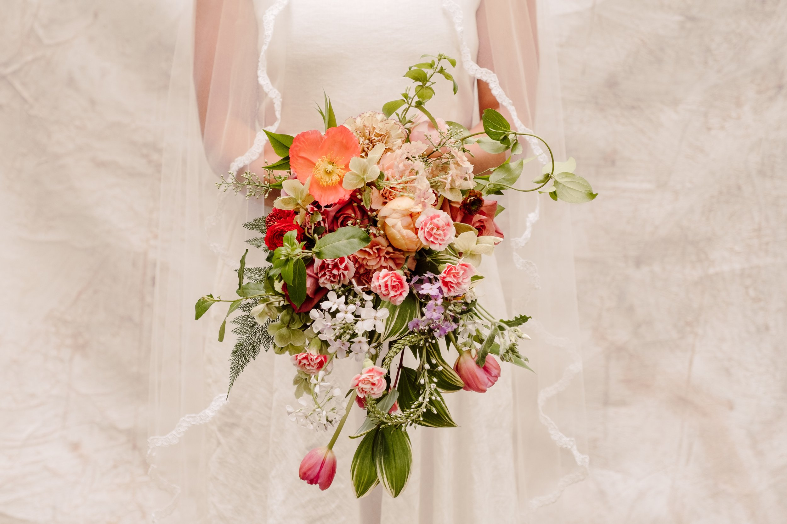
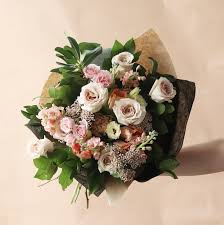
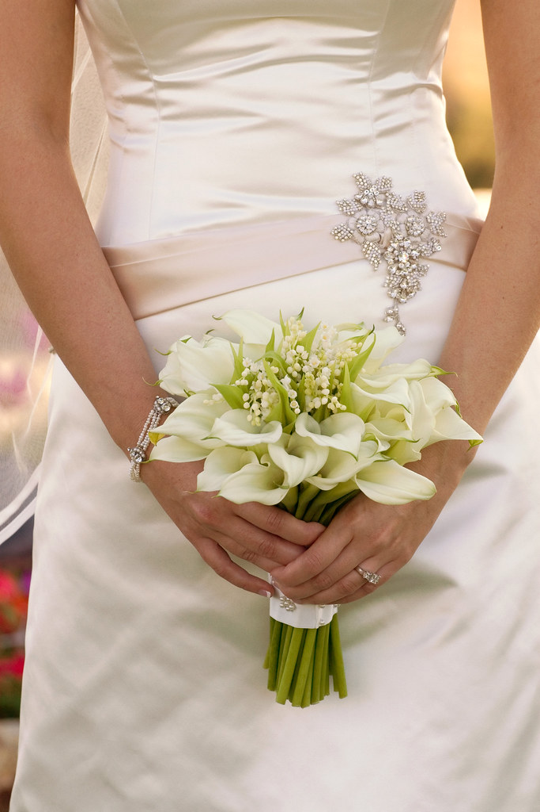

Bouquet Styles
Design with shape: When designing a flower garden, world-renowned Dutch garden designer Piet Oudolf suggests that shape is
a good place to start. Perennials have several basic shapes: spires, plumes, daisies, buttons, globes, umbels, and screens. Try putting different shapes together and see if they spark off each other. Some combinations will be vibrant and dynamic, others may clash. Planting similar flower shapes together can reinforce an idea.
Design in layers: Matt James, in his book, How to Plant a Garden, states, “When planting, try to pull one layer subtly into another — and vice versa — to create a more natural look, rather than simply arrange the layers like a staircase.” Oudolf warns that you can “lose plants in the back,” so it is important to make sure sight lines remain to see flowers at the rear of a border.
Design in combinations:“Think in terms of plant combinations rather than individual species,” suggests Sean Hogan of Cistus Nursery near Portland, Oregon. Mixing plant heights, sizes, colors, scale, and textures keeps the garden engaging in all seasons. Relaxed plantings will provide color, movement and a meadow-like feel.
Different Bouquet Styles

Cascade Bouquet
Groups of fresh greenery and various types of long-stemmed orchids, delphinium, or long-stemmed calla lilies look particularly pretty spilling out of a bouquet on your wedding day! This type of bridal bouquet makes a strong style statement, so make sure to keep your wedding dress and other accessories fairly simple.

Hand-Tied Bouquet
Freer than other bouquet styles, hand-tied bouquets can include a wide assortment of flowers and greenery such as dusty miller or eucalyptus, and as their "hand-tied bouquets" name suggests, are secured simply using ribbon, fabric, or twine (other bouquet styles utilize wire to achieve a precise look).

Nosegay Bouquet
Though similar to posy bouquets, nosegays place more emphasis on greenery rather than flowers – though popular flowers include roses, calla lilies, baby's breath, or orchids.The style works well as a bridesmaid bouquet, due to the small, compact size of the flower arrangement.